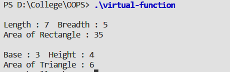

To understand the concept of Virtual Function (polymorphism) by creating a base class
c_polygon
which has virtual function area and two derived classes
c_rectangle
and
c_triangle
. Calculate and return area for rectangle and triangle respectively.
A virtual function a member function which is declared within base class and is re-defined (Overridden) by derived class. When you refer to a derived class object using a pointer or a reference to the base
class, you can call a virtual function for that object and execute the derived class’s version of the function. Some of the rules to define a virtual function are:-
class Base {
public:
// virtual function definition with keyword virtual
};
class Derived: public A {
// polymorphism using function overloading
};
#include <iostream>
using namespace std;
class c_polygon{
protected :
float width, height;
public :
c_polygon() { }
void setParams(float a, float b) {
width = a;
height = b;
}
virtual void getArea() {
cout << "No shape selected" << endl;
}
};
class c_rectangle : public c_polygon {
public :
c_rectangle() { }
void getArea() {
float area = width * height;
cout << "\nLength : " << height << " Breadth : " << width;
cout << "\nArea of Rectangle : " << area << endl;
}
};
class c_triangle : public c_polygon {
public :
c_triangle() { }
void getArea() {
float area = 0.5 * width * height;
cout << "\nBase : " << width << " Height : " << height;
cout << "\nArea of Triangle : " << area << endl;
}
};
int main(int argc, const char * argv[]) {
// insert code here...
c_polygon *ptr;
c_rectangle rect;
c_triangle tr;
ptr = ▭
ptr->setParams(5,7);
ptr->getArea();
ptr = &tr;
ptr->setParams(3,4);
ptr->getArea();
return 0;
}

The above program illustrates the concept of virtual functions. In this program, a polygon class is made which has height and width as data members, a virtual function
getArea()
and function
setParams()
to accept parameters from user. Class
c_polygon
has two derived classes
c_triangle
and
c_rectangle
. Both derived classes have function
getArea()
to calculate area and display. Thus virtual function polymorphism is demonstrated by the three classes.